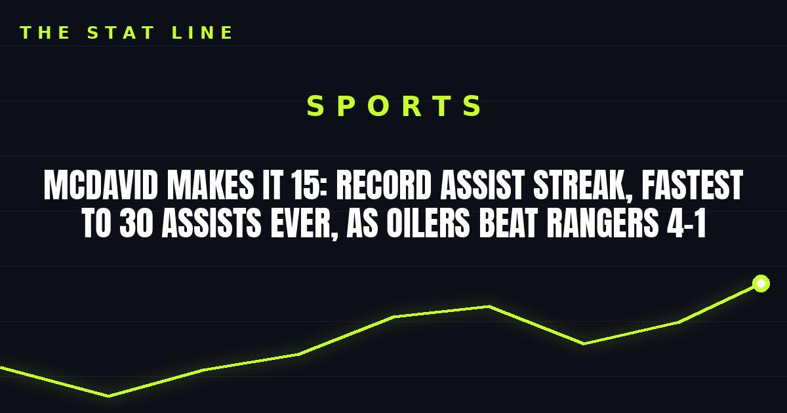

McDavid Makes It 15: Record Assist Streak, Fastest to 30 Assists Ever, as Oilers Beat Rangers 4-1
Connor McDavid scored 50 seconds in and stretched his season-opening assist streak to an NHL-record 15 games, becoming the fastest player ever to 30 assists, as Edmonton beat the Rangers 4-1.

Connor McDavid did not wait long to make Sunday historic. Fifty seconds into Edmonton's visit to Madison Square Garden, he scored on a coast-to-coast move, and by the second period he had stretched his season-opening assist streak to 15 games — an NHL record — in a 4-1 Oilers win over the New York Rangers.
The goal itself did two pieces of franchise bookkeeping. It was the 418th of McDavid's career, moving him past Glenn Anderson into fourth place on the Oilers' all-time list, behind only Wayne Gretzky, Jari Kurri and Leon Draisaitl. And it was his eighth goal in the opening minute of a game, moving him past Mark Messier for the most opening-minute goals in Oilers history.
The assist streak, and the 30-assist mark
The record came at 9:49 of the second period, when McDavid picked up the secondary assist on Evan Bouchard's power-play goal. That made it 15 straight games with an assist to open a season — a new NHL record, extending the mark McDavid set when he reached 13 games on October 29.
Then came the number that stops you cold. The assist was McDavid's 30th of the season, in his 15th game — making him the fastest player in league history to reach 30 assists. Wayne Gretzky needed 16 games in 1984-85, on his way to 73 goals and 208 points. McDavid finished Sunday with 39 points, leading all scorers, and is now on pace to join Gretzky as the only players ever to reach 200 points in a season. That is a pace, not a prediction — but it is the kind of pace only two names in hockey history have ever carried.
It was also McDavid's second 15-game season-opening point streak of his career; he opened 2021-22 with a 17-game point streak. The difference this time is that the assists have never stopped.
Bouchard joins rarified company, too
Bouchard's goal was part of a three-point night (one goal, two assists), and it pushed him to 26 points through 15 games. That makes him just the fourth defenseman in NHL history with at least 25 points through his team's first 15 games, joining Bobby Orr, Al MacInnis and Denis Potvin. Colton Dach scored twice, including an empty-netter with 39.4 seconds left, for his first multi-goal game in the NHL.
In goal, journeyman Matt Tomkins made 27 saves in his first start for Edmonton and his first NHL appearance since April 17, 2024, backstopping the Oilers to a third straight win. Edmonton is now 7-0 on the road, matching the 1983-84 team for the best road start in franchise history.
The Rangers' side of it
Pavel Dorofeyev scored New York's only goal, and Dylan Garand made 21 saves in his ninth straight appearance since Igor Shesterkin went down with a right knee injury. The Rangers have lost four straight and six of their last seven after a strong start, and on this night they simply ran into the best player in the world on a night when the record book was open.
Fifteen games, 30 assists, and a goal 50 seconds in. The assist streak is McDavid's record now, outright — and at this pace, the next one on the list is Gretzky's 200-point season.
Sources
• Reuters — NHL roundup: McDavid's historic night leads Oilers past Rangers
• Associated Press via Europesays — Oilers vs. Rangers recap, November 1, 2026
• Hockey Informers — NHL recap Nov. 1: McDavid streak hits 15
Gear up: Fanatics